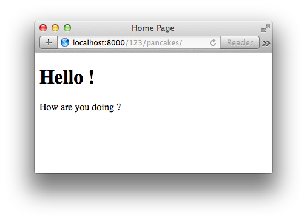

Django URLs, Views and Templates¶
In this lecture we will investigate the basic outline of a Django request/response cycle.
Introduction to Django Views¶
Views are very similar in Django as to how they are in Pyramid
- They are callable items
- They take a request as their first argument
- Rather than returning a dictionary for some other renderer to deal with like Pyramid, Django returns a response object which includes the rendered template or text.
One other difference is that in Pyramid, when you get a request in and a view is called, if there are bits of the URL that got matched by the route that led to that particular view, where do those show up?
They show up in the aspect of the request called the matchdict.
That contains the pieces of the URL that got matched by the route on its way to matching up with the view.
In Django this happens in a different way. Elements from the request path that are matched by a pattern end up getting passed off to you as arguments to your view callable.
What does it mean to be callable in python? It means it’s an object that can be called. If it’s a class, it has a __call__() method, if it’s a function it automatically gets the __call__() method. Anything with those () parenthesis at the end is a callable in Python.
Django has moved largely to what is called “Class Based Views”.
You define a class and that class has a bunch of methods, and those methods interact, and at the end they hand back a response object.
You never actually define the call method because when you create a class based view, you inherit from one of Django’s built in base versions.
At the root of the inheritance tree there is an implementation of a __call__() method that works in pretty much any situation.
We’ll talk for a few minutes here though going over function views, which is the old way Django used to work. The reason for doing this because we want to deconstruct how a view operates at its most generic level. Let’s think for a moment here how we will wire up a view in Django.
What’s the starting point for getting from an incoming request to a piece of code that will answer that request? Where did we begin in Pyramid? We began with a route. A route is the path that a request takes to a view. In Django what do we call routes? URLs. We’ve seen in our Django project in our site directory our urls.py file. We set up a static URL there to point to our media directory.
Django creates these things called urlpatterns. These are basically just lists of calls to the url function. url() comes from django.conf.urls and it is responsible for wiring together 2 things:
- The pattern that is being used to match an incoming request.
- The view that will be pointed at.
We don’t have to point only to views, we can also point at other url confs. Let’s start by pointing at a view though. Let’s start with a new url, and add a regular expression. We should always use a raw string when doing regex to avoid having to escape escapes.
url(r'^/$', views.home_view, name='homepage')- This regex matches only a home directory “/”. The “^” and “$” before and after the “/” signify that. (See regex documentation for more info.)
- The second argument is a callable item that is the thing that gets executed when the route gets matched.
imagersite.views.home_viewwill look in our current directory for a package called views, and look inside there for ahome_view()function. - A third argument to
url()is an optional argument callednamethat provides a handle that we can use to callreversein Django, and build these urls back. Remember in Pyramid that we had on the request object a function calledroute_url().- It took the name of a route, and optionally some arguments that matched up with the placeholders in that route.
- It handed back a rendered URL that would go to that route.
- Django has the same system, and it’s called
reverse, and it allows you to build URLs given the name of a view and some arguments that would match up with the placeholders in that URL. Right now we don’t have any arguments, so we could just sayreverse.homepageand we’d get back the url for the homepage view.
We’ve said now that we have a file called views and that it contains a function called home_view(). Does that exist at the moment? No. We also should have a linter error showing on our views part of imagersite.views.home_view. That’s telling us that we don’t have views imported as a symbol in our current namespace. Django has two ways of dealing with this.
- We can either
import views - We can cast
'imagersite.views.home_view'as a string. When we do this, Django will attempt to perform an import statement. As long asviewsis actually importable, this will work.- This is a nice way to avoid circular import problems.
urls.pycan be a dangerous place because you will import many view files here. Those views will import models. Those models may import something else that points tourls.py. It’s easy to accidentally build circular import problems. If you pass in the imports as strings, this problem can be avoided.
- This is a nice way to avoid circular import problems.
imagersite/imagersite/urls.py
...
from django.conf import settings
from django.conf.urls import include, url
from django.conf.urls.static import static
from django.contrib import admin
urlpatterns = [
url(r'^admin/', include(admin.site.urls)),
url(r'^$', 'imagersite.views.home_view', name='homepage')
]
...
(10:50)
Let’s start up our testing server. Browse to http://localhost:8000/.
(Some time is spent here debugging our app and we discover that 'views.home_view' needs to be 'imagersite.views.home_view'.)
(14:24)
We’re getting an AttributeError here. Why? “‘str’ object has no attribute ‘get’” is our error. Let’s look at our traceback:
if response.get('X-Frame-Options', None) is not None: ...
What does our view return at the moment?
def home_view(request):
return "Hello World!"
A simple string. That’s not what Django is looking for. Remember, Django views must return something that can be used as a response. It needs headers and all the other things that make a proper HTTP response. So what Django provides us with is the HttpResponse object. Let’s add that to our view so that our function can use it:
imagersite/imagersite/views.py
from django.http import HttpResponse
def home_view(request):
return HttpResponse("Hello World!")
Now when the request comes in, we’ll build a response with this “Hello World!” string in it. We should be able to go back and see our app return that now in our browser:

This is the basic shape that a Django view takes.
- A request comes in
- You do some stuff with it
- And then you return something that functions as a response.
You can build the response manually like our current home_view() function. You can also render out templates.
(17:58) Django Templating Engine¶
Loading a template is something we want to do. We can create a template, or we can load one up from somewhere else. Let’s find where we can do that by inspecting Django in the shell:
$ python manage.py shell
In [1]: from django import template
In [2]: dir(template)
Out[2]:
['Context',
'ContextPopException',
...
'engines',
'loader',
]
We want to further inspect the loader object
In [3]: from django.template import loader
In [4]: dir(loader)
Out[4]:
['BaseLoader',
'DjangoTemplates',
...
'engines',
'get_template',
]
get_template is what we’re looking for. Let’s use that in our views.py:
imagersite/imagersite/views.py
from django.http import HttpResponse
from django.template import loader
def home_view(request):
template = loader.get_template('templates/home.html')
return HttpResponse("Hello World!")
This gets us to the idea of template loaders and where Django looks for templates. By default, Django comes with a system that allows it to look inside any installed app for a directory that’s called templates. And it will start looking for templates in that directory.
So, for example:
imagersite/imagersite/templates/home.html
<!DOCTYPE html>
<html>
<head>
<title>Home Page></title>
</head>
<body>
<h1> Hello World!</h1>
</body>
</html>
We now have an html file that lives in a templates directory inside one of our apps. This is how Django works by default. If we run our server, we should find that when the request comes in, it goes in our home_view function and tries to load the template.
We’ll modify our views.py file to handle templates now, and drop a breakpoint in there so we can inspect some things:
imagersite/imagersite/views.py
from django.http import HttpResponse
from django.template import loader
def home_view(request):
import pdb; pdb.set_trace()
template = loader.get_template('home.html')
response_body = template.render()
return HttpResponse(response_body)
When we attempt to browse to our homepage again, we’ll drop into our debugger:
-> template = loader.get_template('home.html')
(Pdb) n
> .../imagersite/imagersite/views.py(8)home_view()
-> response_body = template.render()
(Pdb) template
<django.template.backends.django.Template object at 0x11252ed50>
So we have a template object. Let’s inspect it:
(Pdb) dir(template)
['__class__', '__delattr__', '__dict__', '__doc__', '__format__',
'__getattribute__', '__hash__', '__init__', '__module__', '__new__',
'__reduce__', '__reduce_ex__', '__repr__', '__setattr__', '__sizeof__',
'__str__', '__subclasshook__', '__weakref__', 'origin', 'render', 'template']
You can see that render is one the the template methods. What happens next?
(Pdb) l
3
4
5 def home_view(request):
6 import pdb; pdb.set_trace()
7 template = loader.get_template('home.html')
8 -> response_body = template.render()
9 return HttpResponse(response_body)
[EOF]
(Pdb) n
> .../imagersite/imagersite/views.py(9)home_view()
-> return HttpResponse(response_body)
(Pdb) response_body
u'<!DOCTYPE html>\n<html>\n<head>\n <title>Home Page></title>\n</head>\n<body>\n <h1> Hello World!</h1>\n</body>\n</html>\n'
(Pdb)
So we get a string that’s been rendered out into HTML.
The render() method is much like rendering in python.
response_body = template.render({'foo': 'bar'})
<body>
<h1> Hello {{ foo }}!</h1>
</body>

Django’s templating language looks just like jinja, and in fact in later versions of Django (>=1.8), you can specify what templating engine you want to use, and it can be jinja.
When using Django, you are encouraged to try and use Django’s templating language because it tries to keep as much processing of values away from the templates as possible, and instead has processing done in python.
So this kind of a pattern here - where we take in a request, we load up a template, we render that template and pass some kind of a context to it, and then use the rendered body of that and hand it back as a result of our call is a very common thing in Django. At the root level, this is always the pattern.
(30:04)
We’ll talk for a moment here about ways this pattern might change. Let’s add another url to our urlpatterns, and a new test_view:
imagersite/imagersite/urls.py
...
urlpatterns = [
url(r'^admin/', include(admin.site.urls)),
url(r'^$', 'imagersite.views.home_view', name='homepage'),
url(r'^(\d+)/$', 'imagersite.views.test_view', name='testme'),
]
...
imagersite/imagersite/views.py
...
def test_view(request, foo):
template = loader.get_template('home.html')
response_body = template.render({'foo': foo})
return HttpResponse(response_body)
It’s important to note that when changing around URLs, it’s a good idea to restart your server because they are often cached.
So what does our new url match? url(r'^(\d+)/$', ... One or more numeric digits. If we go to our browser now and navigate to this url: http://localhost:8000/1/, we will see that 1 rendered in our template:

You can see that any number put in that url end up as keyword arguments. If they don’t have a name to them, they end up as positional arguments. If we change up our urls to accept two positional arguments:
url(r'^(\d+)/(\w+)/$', 'imagersite.views.test_view', name='testme'),
And change our views so that test_view accepts foo and bar:
imagersite/imagersite/views.py
...
def test_view(request, foo, bar):
template = loader.get_template('home.html')
response_body = template.render({'foo': foo}, {'bar': bar})
return HttpResponse(response_body)
And accept our new variable bar into our template:
imagersite/imagersite/templates/home.html
<!DOCTYPE html>
<html>
<head>
<title>Home Page</title>
</head>
<body>
<h1>Hello {{ foo }}!</h1>
<p>How are you doing {{ bar }}?</p>
</body>
</html>
Now our page renders like this:

If we decide to change our minds and use keyword arguments instead of positional arguments, we can do that:
imagersite/imagersite/urls.py
...
urlpatterns = [
url(r'^admin/', include(admin.site.urls)),
url(r'^$', 'imagersite.views.home_view', name='homepage'),
url(r'^(?P<num>\d+)/(?P<name>\w+)/$',
'imagersite.views.test_view', name='testme'),
]
...
imagersite/imagersite/views.py
...
def test_view(request, num=0, name='baloons'):
template = loader.get_template('home.html')
response_body = template.render({'foo': num, 'bar': name})
return HttpResponse(response_body)
So now we can change around the order in which the arguments come in because they are keywords:
def test_view(request, name='baloons', num=0):
response_body = template.render({'foo': name, 'bar': num})

This is the relationship between the urls and the patterns you set up for the urls, and the call signatures that you write for views. Placeholders will be passed as arguments to your views. This is very different from the Pyramid way of doing things. Those arguments can be keyword arguments if the placeholders you create for them are marked with the (?P<...>) syntax. This is standard python regex syntax.
(39:50) Question from class: “So since you’re passing defaults into your keyword arguments, if you don’t pass them into the url, it will use the defaults?”
Let’s try that. First we’ll change our url matching pattern to accept 0 or more characters in the \w part:
url(r'^(?P<num>\d+)/(?P<name>\w*)/$',
'imagersite.views.test_view', name='testme'),

So it didn’t pick up our default value. The fact that we provided them in our view is a bit of a red herring. If the url is going to match, some value will be there and will be passed it. But this is how you make optional keyword arguments - by providing them with a default value. It is possible to make Django url patterns that have fully optional chunks in them that might or might not be present. It’s not very easy to do. It takes some complex regex patterns. It may not be the best way of doing things as well. Sometimes it’s better to just make more than one url pattern point to the same view. We can make a 2nd pattern here that only contains the <num> matching part, and then our default optional keyword would actually pass it’s value through.
Question from class: “So do you have to have defaults?”
You must put a default value there in order for it to be a keyword parameter.
Q: “But the default will never be used...?”
Unless you make a special complex matching pattern or a second url that doesn’t use a keyword and points to the same view.
(44:07) Django Shortcuts¶
This idea of loading a template, rendering a template, and handing back a response is so completely common, that Django has created a few shortcuts that mean exactly the same thing. The shortcuts are called render and render_to_response.
render takes a request and template_name as required arguments. There are a few optional arguments as well.
Let’s explore this for a moment. We need to re-write our views.py:
imagersite/imagersite/views.py
from django.http import HttpResponse
from django.shortcuts import render, render_to_response
from django.template import loader
def home_view(request):
context = {'foo': 'name', 'bar': 'num'}
return render(request, 'home.html', context=context)
...
So our shortcut render takes the request as an argument, the template (‘home.html’), and our hard-coded context.
Let’s go back to our homepage and see what it looks like now:
http://localhost:8000/

We can do the same thing to our test_view:
imagersite/imagersite/views.py
...
def test_view(request, num=0, name='baloons'):
context = {'num': num, 'name': name}
return render(request, 'home.html', context=context)
(Some time is spent here debugging.) We need to also change our home.html to work with our test_view:
imagersite/imagersite/templates/home.html
<!DOCTYPE html>
<html>
<head>
<title>Home Page</title>
</head>
<body>
<h1>Hello {{ name }}!</h1>
<p>How are you doing {{ num }}?</p>
</body>
</html>
And our home_view needs adjusting now too:
imagersite/imagersite/views.py
def home_view(request):
context = {'name': 'name', 'num': 'num'}
return render(request, 'home.html', context=context)
And we’re back to our “Hello Pancakes”
(50:25) render_to_response¶
Another thing we can do is render_to_response. There is a difference between these two. From the docs: “This function preceded the introduction of render() and works similarly except that it doesn’t make the request available in the response. It’s not recommended and is likely to be deprecated in the future.” (Note: this is from the 1.9 docs. The video is made during the 1.8 era and is not the same text as this. Cris makes note that we will be using render() instead of render_to_response().)
There’s really not a good reason to use render_to_response unless you have a very special use case. You may run into render_to_response in legacy code.
One final word about this. This kind of structure that we are working with here which is a ‘function based view’ is not really the way Django is optimized to operate. They want you to use class based views and the system of generic class based views to pass things around.
(53:43) Class Based Views¶
We’ll update our views.py to use a class view:
imagersite/imagersite/views.py
...
from django.views.generic import TemplateView
...
All of the class based views come from django.views.generic. TemplateView‘s purpose is to render a template. All of the class based views are going to provide us with simple ways of performing common tasks. They also provide us with API methods to take care of some of the things that go around those common tasks. There is good documentation regarding the class based views API. It has a list of all of the different kinds of views that there are. Let’s click on TemplateView, and see what it contains:
- A flowchart of methods:
- a
dispatch()method http_method_not_allowed()get_context_data()- This method returns a dictionary that includes all of the items we want to pass in as part of the context.
- a
So let’s go back to our views.py ClassView and define for ourselves a get_context_data() method and return a dictionary. We’ll also insert a breakpoint so we can inspect the state of things when this method is called:
imagersite/imagersite/views.py
...
class ClassView(TemplateView):
template_name = 'home.html'
def get_context_data(self):
import pdb; pdb.set_trace()
return {}
...
We also need to rewire our urls:
imagersite/imagersite/urls.py
...
from imagersite import views
...
url(r'^(?P<num>\d+)/(?P<name>\w+)/$',
imagersite.views.ClassView.as_view(), name='testme'),
...
The temptation will be to just drop the class in there. That’s not correct. When you use a class based view in a url, you need to call the as_view() method on it. What’s the difference between calling the class itself, and calling the method of as_view()? The as_view() method is a class method. What’s the most common case of using a class method? To provide you with an alternate constructor. as_view() builds an instance of this view and hands it back to you.
What is the implication of this? As was mentioned before, the urlpatterns are evaluated and then cached. The pointers to the view functions are evaluated and then cached, so the view functions themselves end up as the target to these url paths. When we say views.ClassView.as_view() and that is evaluated, what does our route point at? It points at one instance of the class, and that one instance is cahced and held on to. What this means is that every request that comes into Django that matches that url and gets handed off to that instance, that instance is the only instance that exists. There is only one instance. What that means is that if in one of our methods we do something like:
class ClassView(TemplateView):
template_name = 'home.html'
def get_context_data(self):
import pdb; pdb.set_trace()
self.flibbertygibbet = 'horcrux'
return {}
Now our self.flibbertygibbet attribute is set for every request that comes after this until we restart Django. So don’t mutate your class objects. Don’t mutate your instances in views. Try really hard not to hang too much state on your class objects because that state persists. Flask and Pyramid create classes when the request comes in, and the state of that class is local to a particular request. That is not the case in Django. The state of a class based view is global to all requests. So watch out for that.
There will come a time when something unexpected happens to you. You make a call to a view that you set up some sort of fancy switch on, and it works perfectly, and then you make a different call to it and it no longer works as you expect. 9 times out of 10 this happens because you flip a switch in the state of your view, and you didn’t flip it back. Again, be careful. Be aware that the internal state of a class in Django when it’s a class based view is global to all requests.
Let’s try our new class based view:
http:://localhost:8000/123/pancakes/
This drops into our debugger:
> .../imagersite/imagersite/views.py(22)get_context_data()
-> return {}
(Pdb) l
17 class ClassView(TemplateView):
18 template_name = 'home.html'
19
20 def get_context_data(self, num=0, name='balloons'):
21 import pdb; pdb.set_trace()
22 -> return {}
[EOF]
(Pdb) num
u'123'
(Pdb) name
u'pancakes'
(Pdb) c
[19/Jan/2016 08:06:32]"GET /123/pancakes/ HTTP/1.1" 200 136

Notice, we passed off a context that doesn’t have any of the values in it that our template is expecting. Did our template break? No! This is a Django feature. If there is an error that happens when you render a template, Django will swallow it silently unless you take extra measures to set up a template debugger. This can be annoying when you try to debug things, so remember there are settings that can allow you to turn on template debugging.
So let’s actually return our context here, and remove our breakpoint:
imagersite/imagersite/views.py
class ClassView(TemplateView):
template_name = 'home.html'
def get_context_data(self, num=0, name='balloons'):
return {'num': num, 'name': name}
Reload our browser, and we should see our “Hello pancakes!” message again.
One last thing that’s interesting: We set our TemplateView to have a template_name = home.html. If we take that away, we’ll get an error. These kinds of attributes of class based views can also be used as arguments of the as_view() call. So in our urlpatterns:
imagersite/imagersite/urls.py
...
url(r'^(?P<num>\d+)/(?P<name>\w+)/$',
views.ClassView.as_view(template_name="home.html"), name='testme'),
...
What does this mean? There is a reason these views are called “generic”. The reason is because they have a certain number of attributes that control how they work. Things like template_name need a template in order to render. They provide a method by which all of those things can be passed in as arguments to the as_view() call, because that means you can use this view over and over and over again in different ways with different templates. This is actually kind of cool.
In fact as an experiment, we can try to use TemplateView without any view code at all, and it will still render:
imagersite/imagersite/urls.py
...
from django.views.generic import TemplateView
...
url(r'^(?P<num>\d+)/(?P<name>\w+)/$',
TemplateView.as_view(template_name="home.html"), name='testme'),
...
And now we reload our browser, and our TemplateView is able to render our template automatically from the context of the url.
So Django’s generic views are very powerful for you, but you need to maintain a situational awareness with them.
- What options do they offer?
- How are those options meant to be used?
- What is the intended flow of operations through one of these views? It’s not always easy to figure it out.
- You will benefit greatly from having the API documentation handy when working.